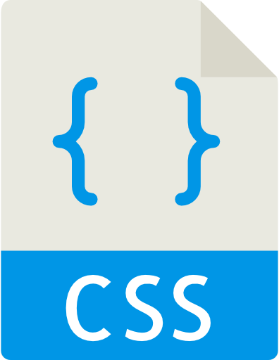

O que é CSS?

CSS é a sigla para Cascading Style Sheets que em português foi traduzido para folhas de estilo em cascata e nada mais é, que um documento onde são definidas regras de fomatação ou de estilos, a serem aplicadas aos elementos da marcação de um documento HTML.
A grande vantagem do uso de CSS é a de separar a marcação HTML, da apresentação do site. Em outras palavras, vale dizer que o HTML destina-se unicamente a estruturar e marcar o conteúdo, ficando por conta das CSS toda a responsabilidade pelo visual do documento.
HTML marca e estrutura textos, cabeçalhos, parágrafos, links, botões, formulários, imagens e demais elementos da página e CSS define cores, posicionamento na tela, estilos de linhas, bordas e tudo o mais relacionado à apresentação.
A adoção desta técnica resulta em múltiplas vantagens e benefícios que não são conseguidos quando se utiliza o conceito largamente empregado para construção de web sites, baseado no uso de tabelas e de atributos de estilização dentro das tags HTML.
Qual é finalidade das CSS?
A finalidade das CSS é a de retirar da marcação toda e qualquer declaração que vise a apresentação do documento. Isto significa dizer que tags do tipo font, b, i bem como uso de colunas e linhas de tabelas para obtenção de espaçamentos não são admitidos ou admitidos com restrições em um projeto Web com CSS. Vale dizer simplificando: HTML para estruturação e CSS para apresentação.
As tags b e i cumprem finalidade unicamente de apresentação. Elas não têm qualquer efeito sobre tecnologias assistivas. Foram criadas à época antiga de marcar documentos web e basicamente calcados em estruturação para mídia tipográfica, não imputando qualquer relevância ao texto com elas marcado e nada significam para leitores de tela ou mecanismos de busca por exemplo. Não estão em desuso, são previstas na HTML5, podem e devem ser usadas se a sua intenção é a de contemplar somente mídia visual.
As tags strong e em, estas sim, são interpretadas por todas as tecnologias assistivas e devem ser usadas em substituição a b e i se a sua intenção é a de contemplar estas tecnologias.
Porque devo usar CSS

CSS permite que você retire da marcação HTML toda a formatação (apresentação) do documento WEB. Quem vai determinar cores, formas, tipos e tamanhos, posicionamento e em fim todo o "visual" da página são as CSS. As vantagens estão relatadas nas respostas a seguir.
Quais as vantagens de se usar CSS?
Inúmeras são as vantagens do uso das CSS nos documentos Web. Eis uma relação das principais:
- controle total sôbre a apresentação do site a partir de um arquivo central;
- agilização da manutenção e redesign do site;
- saida para diferentes tipos de mídia a partir de uma versão única de HTML;
- redução do tempo de carga dos documentos Web;
- adequação simplificada aos critérios de acessibilidade e usabilidade;
- elaboração de documentos consistentes com as aplicações de usuários futuras;
- aumento considerável na portabilidade dos documentos Web.
O que é regra CSS?
Regra CSS e uma unidade mínima de programação de estilos, que segue uma sintaxe própria e destina-se a estilizar uma ou mais propriedades CSS. (ver resposta seguinte)
Como escrevo uma regra CSS?
A sintaxe de uma regra CSS compreende um seletor uma propriedade e um valor escritos como mostrado abaixo:
seletor {propriedade: valor;}
Nota: ao conjunto propriedade:valor denominamos declaração CSS
Fonte: http://www.maujor.com